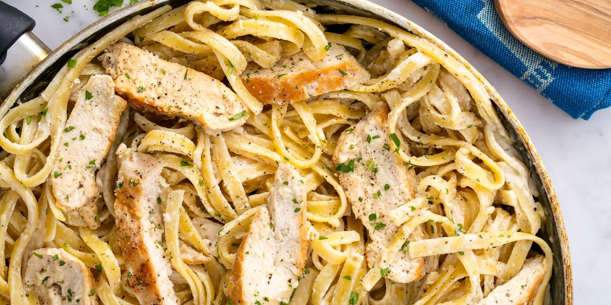

The most delcious Chicken Alfredo recipe!!!

Ingredients:
- 2 tbsp. extra-virgin olive oil
- 2 bopnless skinless chicken breasts
- Kosher salt
- Freshly ground black pepper
- 1 1/2 c. whole milk
- 1 1/2 c. low-sodium chicken broth
- 2 cloves garlic, minced
- 8 oz. feuccini
- 1/2 c. heavy cream
- 1 c. freshly grated parmesan
DIRECTIONS
- In a large skillet over medium-high heat, heat oil. Add chicken and season with salt and pepper. Cook until golden and cooked through, 8 minutes per side. Let rest 10 minutes, then slice.
- Add milk, broth, and garlic to skillet. Season with salt and pepper and bring to a simmer. Add fettuccine, stirring frequently for about 3 minutes. Let cook until al dente, 8 minutes more.
- Stir in heavy cream and Parmesan until combined. Simmer until sauce thickens.
- Remove from heat and stir in sliced chicken. Garnish with parsley.